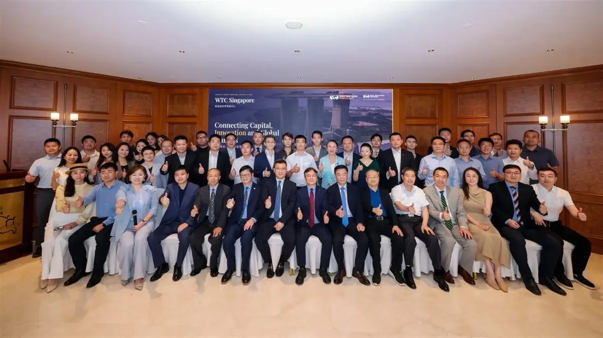
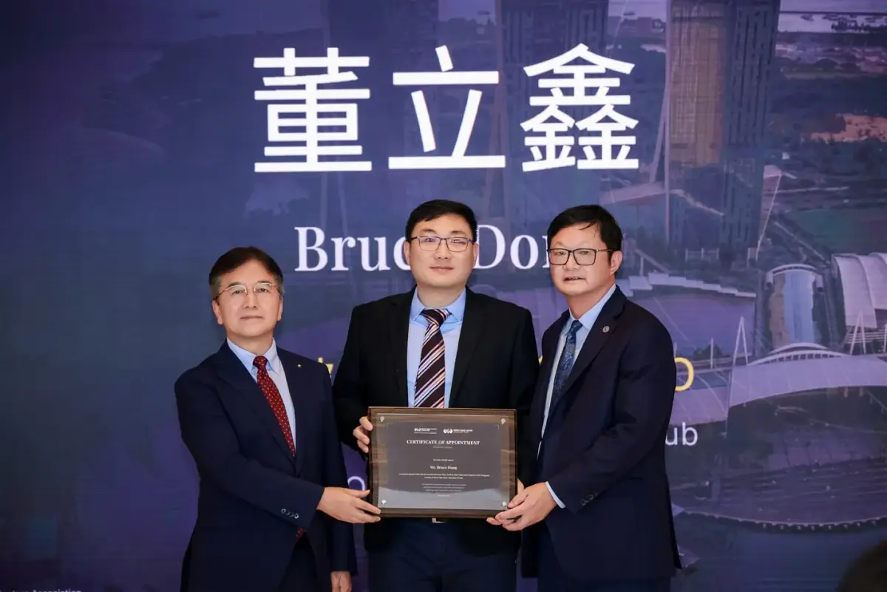

MEDIA-08
第三方报道 · MEDIA COVERAGE
董立鑫出任新加坡世界贸易中心秘书长兼首席运营官，链接中国、东盟与全球资本创新生态
Appointed Secretary-General & COO of WTC Singapore — bridging China, ASEAN and global capital.
第三方媒体报道：海鑫汇创始人兼CEO董立鑫（Bruce Dong）获任新加坡世界贸易中心（WTC Singapore）秘书长兼首席运营官，围绕 One Club、GlobalX 出海加速器与 WTC 投资基金联通中国、东盟与全球资本。来源：世界贸易中心协会（WTCA）官网。
报道概述
海鑫汇创始人兼CEO董立鑫（Bruce Dong）获任新加坡世界贸易中心（WTC Singapore）秘书长兼首席运营官，与 WTCA 全球理事李明星、副总裁王迅及 WTC Singapore 理事长兼董事长张克、首席代表兼 CEO 朱小兰共同推动新加坡世贸中心焕新起航，依托新加坡国际金融与贸易枢纽优势，围绕 One Club 商务俱乐部、GlobalX 出海加速器、WTC 投资基金三大业务，联通中国、东盟与全球资本、创新及产业资源，并与中国国际贸易学会金融文化贸易促进工作委员会达成战略合作。

海鑫汇视角
从顾问到枢纽运营者，董立鑫的角色演进折射出中国企业全球化正从“找顾问”走向“建生态”——以新加坡联通中国、东盟与全球资本。

原文链接
本文为第三方媒体对海鑫汇创始人兼CEO董立鑫的公开报道整理，首发于 世界贸易中心协会（WTCA）官网。 查看官网原文 →
想把“出海”从口号变成可执行的路径？先做一次免费首诊判断。
预约免费首诊 →